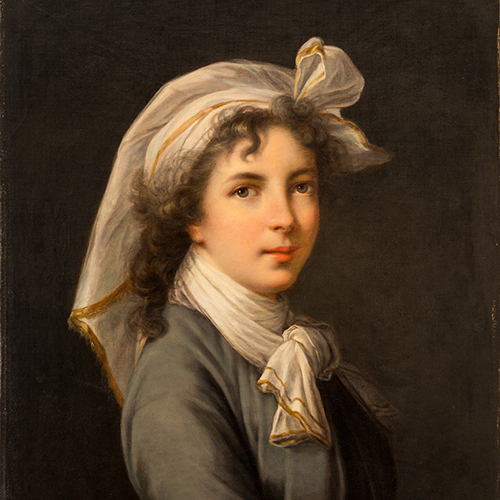
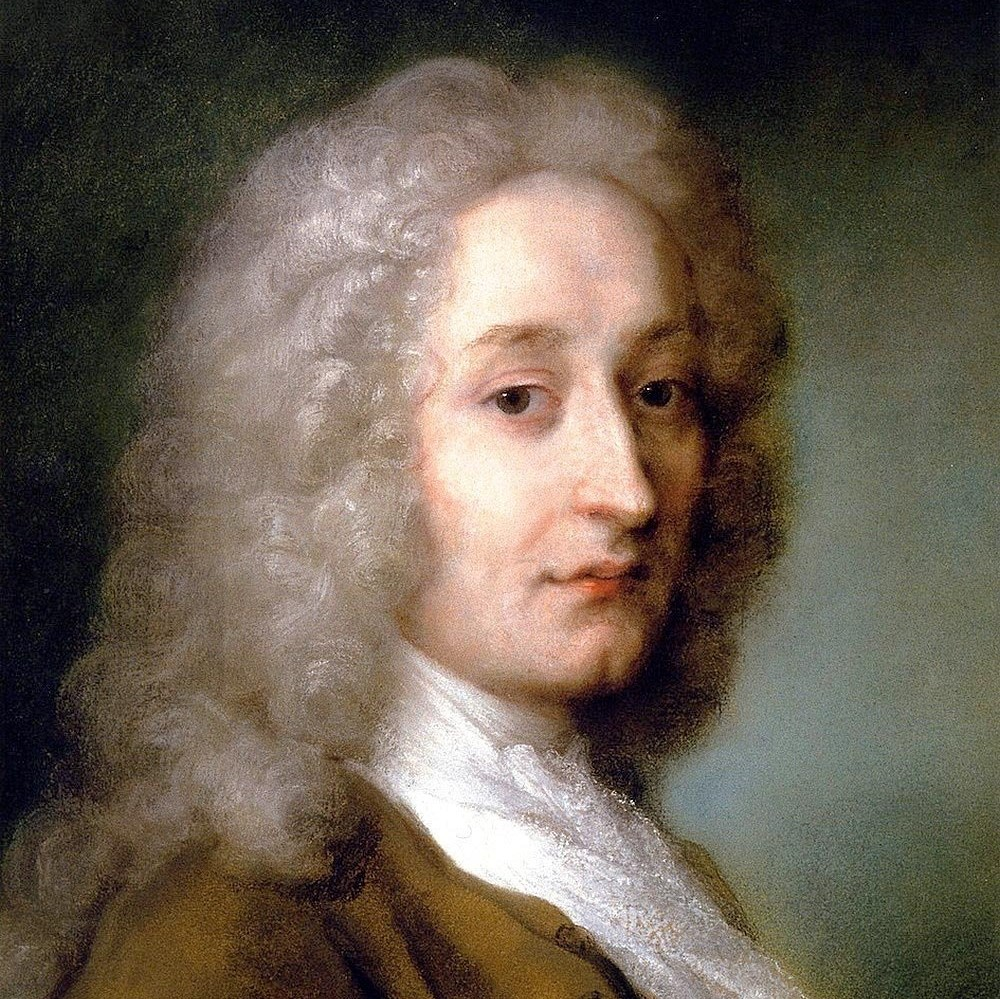

What is Rococo?
The Movement
Rococo is an artistic movement that began in France in the 1730s. The name Rococo was derived from the French word "rocaille", which means pebble or rock. This refers to how seashells and pebbles were used to decorate fountains and garden grottos during the Renaissance era. Rococo style, especially architecture and furniture, were known to be decorated by intricate frames and patterns.
Baroque painting: The Night Watch vs Rococo painting: The Swing
The History
Rococo developed from the Baroque period, which also gave it the name Late Baroque. After the passing of King Louis XIV of France, who ruled the land with the style of Baroque, artists and architects alike began to create a more lighter and intimate style for new residences of nobles in Paris, giving life to the aristocratic lifestyle. In complete contrast to the Baroque artistic period with elements of heavy and dark decorations, Rococo found its unique focus on lightness, elegance, and playfulness. Theatricality and drama had a major influence on art and architecture of Rococo. The paintings that sprouted from this era were created to celebrate Rococo's grandiose ideals and lust for aristocratic lifestyle and pastimes.
- Light and bright pastel colors
- Playful, easygoing and lighthearted themes
- Delicate and flowy clothing
- Delicate brushworks
- Emphasis on foliage
- Often framed with gilded or silver frames
Characteristics of Rococo Paintings
The Influences
The movement that was started in France quickly expanded to other parts of Europe such as Italy, Austria, Germany, and Russia. As the style gained more popularity in these locations, each nation grew their own distinct version of Rococo. The original France's Rococo consist of complex floral-patterned frames made for mirrors and paintings, which were sculpted using plaster and often gilded. French would use this style of architecture and furniture in salons, a new kind of room designed to entertain guests. Italian Rococo followed French with carved ornaments, paintings often gets featured on the ceilings of churches and salons. Rococo style reached its peak in Germany, where ornaments were more intense than the original and foliage patterns all across the walls.
In the 1820s, a Second Rococo was initiated under King Louis Philippe which expanded to Britain and Bavaria. British called this revival as Victorian Rococo and lasted until the 1870s. The British involvement with the style gave way to influence American Rococo Revival in the United States led by John Henry Belter.
The Legacy
As all things in life comes and goes, Rococo style began to fade away in the mid-1800s. By 1836, many deemed the style as "old-fashioned" and even "tastelessly florid and ornate". It was not until the late 20th century during the Pop Arts movement that Rococo art was critically re-evaluated due to the artists encouraging the expression of the same ornate, stylisic, and whimsical themes.
Key Painters of Rococo
-

Elisabeth Le Brun
French Painter
-
François Boucher
French Painter
-
Giovanni Battista Tiepolo
Italian Painter
-

Jean-Antoine Watteau
French Painter
-
Jean-Honoré Fragonard
French Painter
-
Thomas Gainsborough
English Painter